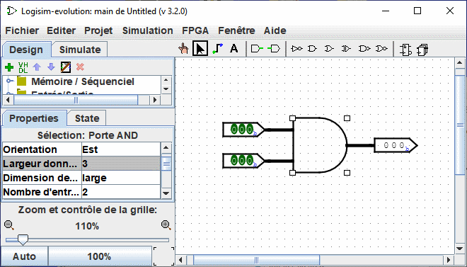
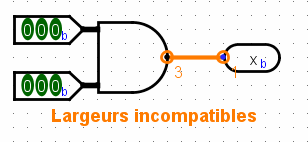

Créer des faisceaux de câbles
Dans un simple circuit Logisim, la plupart des câbles ne sont composés que d'un fil et ne transportent qu'un seul bit. Mais Logisim permet également de créer des groupes de câbles (nappes de câbles,bus) qui transportent plusieurs bits. Le nombre de bits circulant le long de ces nappes est désigné par la propriété largeur données de ce câble.
Chaque entrée/sortie de chaque composant dans un circuit a une largeur de bit associée. Souvent la largeur est de 1, et il n'y a pas moyen de changer cela, mais plusieurs composants de la librairie de Logisim incluent des attributs qui vous permettent de changer la largeur de données des entrées et sorties.
La saisie d'écran ci-dessous illustre un circuit simple pour trouver la combinaison d'un groupe AND d'une largeur de trois bits. Notez comment la sortie à trois bits représente la combinaison AND des deux entrées de trois bits. Tous les composants du schéma ont été réglés via l'attribut Largeur donnée pour gérer des données trois bits.

Tous les composants dans Logisim définissent une largeur en bit pour chaque entrée et sortie. Par contraste, la largeur d'un câble est non définie: par contre, la largeur du câble s'adapte automatiquement aux composants auxquels il est attaché. Si un câble relie deux composants avec des largeurs en bits différentes, Logisim affiche une erreur "Largeur incompatible" et indique l'emplacement du conflit avec des câbles orange. Dans l'exemple ci-dessous, la largeur en bits de la connexion de sortie a été modifiée à 1, et Logisim signale l'erreur et indique la largeur des données de chaque côté de la connexion.

Les câbles qui relient des points incompatibles (représenté en orange) ne transportent aucune valeur.
Pour les câbles à un seul bit, vous pouvez voir d'un seul coup d'oeil quelle valeur est transportée par le câble. Logisim les colorise avec du vert clair ou foncé en fonction de la valeur. Ce n'est pas le cas pour des câbles multibits: ils sont simplement noirs. Vous pouvez malgré tout sonder le câble en cliquant dessus avec l'outil "pousser". ( ).
).

Cet affichage de la sonde est utile pour déboguer les circuits utilisant des nappes de câbles.
Suite: Répartiteur.